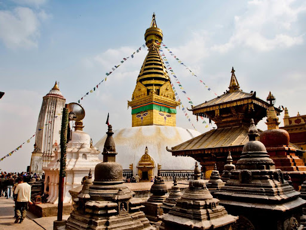

Kathmandu

Nepal's largest city, Kathmandu, serves as both the political and cultural hub of the nation. In Kathmandu, cutting-edge technical advancements coexist with age-old customs. The visitor is mesmerised by the magnificence of the past, though, and may find themselves staring at stupas that are meant to inspire spirituality, a bronze sculpture from the 18th century, or an intricately carved wooden window frame. Like any major city, Kathmandu has grown rapidly in the past ten years, but its residents are still incredibly amiable despite the cacophony of modern metropolitan life. With its long-standing customs still in place, Kathmandu is endowed with a Living Goddess and is frequently the scene of countless ceremonial processions and festivals that draw hordes of pilgrims hoping to receive blessings from the goddess. These mythical religious celebrations are quite a sight, featuring masked dancers frequently taken over by the spirits of the gods and chariot processions.
Places to visit in Kathmandu
Kathmandu Durbar Square
Kathmandu Durbar Square is an ancient durbar square located in the heart of Kathmandu. It is also referred to as Basantapur Durbar and Hanuman Dhoka. Located in the centre of ancient Kathmandu, Basantapur never fails to astound first-time guests with its elaborate wood carvings and extensive past. Hanuman Dhoka was constructed in the Licchavi era (4th to 8th century AD), and in the 17th century, King Pratap Malla greatly expanded the area. The square has the greatest concentration of historic buildings; it is home to numerous palaces, courtyards, and temples. Because there are more than 50 temples in the square, it is often referred to as "the Museum of Temples". The courtyards surrounding Gaddi Baithak are home to a number of handicraft stores where you can find a lovely assortment of handicrafts that are available for purchase.
Places inside Durbar Square are Taleju Temple, Kumari Temple, Jagannath Temple, Nasal Chawk, Narsingha Statue, Swet Bhairav, Shisha Bhaitak, Tribhuwan Museum,Kal Bhairab.
Swyambhu
In the northwest of the Kathmandu Valley, on the small mountain of Swaymbhunath, find serenity and offer prayers. From the 1970s onward, visitors who found the name difficult to pronounce have referred to it as "Monkey Temple". Swayambhu offers visitors a bird's-eye perspective of the city as it overlooks the majority of the valley. For ages, the Buddhist site has been associated with Hindu temples and deities, and the stupa has served as a symbol of faith and harmony. This is where the Kathmandu Valley's fame is claimed to have begun.
Some important monuments to see in this area
Boudha

Located in Kathmandu, Nepal, Boudhanath, also known as Boudha, is a prominent and well-known holy site. For those who practise Tibetan Buddhism in particular, it is one of the biggest stupas in the world and is extremely significant from a cultural, religious, and historical standpoint.
The stupa, a massive hemispherical edifice with painted eyes on all four sides that represent the all-seeing wisdom of Buddha, is the major attraction of Boudhanath. Prayer wheels, prayer flags, and vibrant decorations all contribute to the place's spiritual atmosphere.
With a large number of monasteries, shrines, and stores offering prayer beads, incense, traditional crafts, and religious artefacts, Boudha is a major hub for Tibetan Buddhism in Nepal. It serves as a gathering place for locals, visitors, pilgrims, and monks and promotes a lively environment of prayer, education, and cross-cultural interaction.
Boudhanath offers a variety of activities for visitors to engage in, including praying, spinning prayer wheels, and circumambulating the stupa (circumambulating it in a clockwise manner). In addition, the location holds a number of festivals and rituals all year long, drawing visitors from all over the world who come to witness its stunning architecture and depth of spirituality.
Pasupatinath
Pashupatinath is a renowned Hindu temple complex located in Kathmandu, Nepal, along the banks of the Bagmati River. It is dedicated to Lord Pashupatinath, a form of Lord Shiva, and is considered one of the holiest pilgrimage sites for Hindus worldwide. The temple complex includes intricate architecture, shrines, ghats (cremation platforms), and a bustling atmosphere of devotion and spirituality. Pashupatinath is not only a religious center but also a cultural and historical landmark, attracting visitors for its religious significance, ancient heritage, and stunning architectural beauty.
Patan Durbar Square

Patan is home to the valley’s finest craftsmen who have preserved ancient techniques of metal craft.
Situated 5 km southeast of Kathmandu, Patan, sometimes referred to as "Lalitpur," the city of artisans, is home to the best craftsmen in the valley, who have kept age-old methods like the lost wax process and repoussé, which are used to create stunning sculptures. With its brick homes, winding streets, and numerous well-preserved Hindu and Buddhist temples (vihars), the city still exudes a lot of its historic beauty. The sound of artisans bending over the statuettes they are crafting is the most common sound in Patan. Hinduism and Buddhism have coexisted here for ages, influencing one another, and the religious concord is exemplary, just like it is in Kathmandu.
The Major attraction of Patan Darbar Square
Patan Museum
This museum inside the durbar square specializes in bronze statues and religious objects. It is considered as one of the best museums in Asia.
Hiranya Varna Mahavihar
Located inside kwabadehul, this three- story golden pagoda of Lokeshwar (lord Buddha) was built in the twelfth century by king Bhaskar Verma. It is famous as the golden temple. Inside the upper story of the pagoda, are the golden images of lord Buddha and a large prayer wheel.
Golden Window
This was specially built for King Siddhi Narasingha malla. His devotion to Lord Krishna as well as the Buddhist God of compassion Karunamaya Lokeshwar is a famous episode in Nepalese history of religion.
Mahabouddha Temple
This temple of Buddha built interestingly in the Hindu Shikara style- has five golden pinnacles. They are all in a stupa shape very symbolic of five basic elements.
Golden Temple
This golden temple of Buddha in Patan is the oldest richest and most famous monument indeed. It was built 12th century is known for its beautiful gold works shining very graciously.
Krishna Temple
The Famous Temple Which was built in the 17th century, the temple of Lord Krishna holds a commanding position in the palace complex of Patan. It is the only temple in Nepal to have 21 shrines and is completely made of stone. Most of the important scenes from the ancient Hindu epics the Ramayana and the Mahabharata, have been engraved on its friezes.
Bhaktapur Durbar Square

The Golden Gate is the centre of attraction at Bhaktapur Durbar Square. The main entrance of the former palace building here depicts master art at its best. The magnificent workmanship on the tympanum with its images of various deities points to the skill of ancient masters. The Fifty-five Window Palace here used to be the residence of Bhaktapur's old kings. The many courtyards inside contain shrines dedicated to various deities, which are all richly carved. The Durbar Square has a large open brick-paved area in the centre surrounded by temples arranged in a harmonious layout. UNESCO has declared Bhaktapur Durbar Square a World Heritage Site. Inside the area of dubar square you can also try to make pottery objects.
Taumadhi Square
A narrow alley leads from the Durbar Square to Taumadhi Square that contains the pride of Bhaktapur and the symbol of the artistic and architectural supremacy of the Kathmandu Valley - the Nyatapola temple. Built atop a massive terraced plinth, the splendid five-roofed pagoda is the tallest in Nepal. Its stone, woodcarvings, and graceful design display sacred architecture at its height. The stairs leading up to the temple is flanked by stone figures of deities and mythical animals.
Dattatreya Square
The Dattatreya Square of Bhaktapur used to be the centre of town in ancient times. The streets are lined with traditional houses ornamented with elaborately carved wooden windows. The Dattatreya temple, which draws both Hindu and Buddhist worshippers, dates back to the 15th century. The Bhimsen temple here was erected in the early 1600s. The famed Peacock Window of Bhaktapur is set into a wall of the Pujari Math where Hindu priests reside.
Chitwan National Park
One of the last populations of single-horned Asiatic rhinoceroses and one of the last remaining Bengal Tiger refuges can be found in Chitwan, which boasts an exceptionally rich flora and fauna. The first national park in Nepal was Chitwan National Park (CNP), created in 1973. Situated in Nepal's Southern Central Terai, the property once encompassed the foothills. With a total size of 93,200 hectares, it spans four districts: Makwanpur, Nawalparasi, Parsa, and Chitwan.
The park is the last surviving example of the natural ecosystems of the ‘Terai’ region and covers subtropical lowland, wedged between two east-west river valleys at the base of the Siwalik range of the outer Himalayas.
Pokhara

Pokhara’s tranquil beauty has been the subject of inspiration for many travel writers. Its pristine air, spectacular backdrop of snowy peaks, blue lakes and surrounding greenery make it ‘the jewel in the Himalaya’, a place of remarkable natural disposition. With the magnificent Annapurna range forming the backdrop and the serenity of the Cluster of 9 Lakes with three major ones - Phewa, Rupa and Begnas – Pokhara is a great destination for a weekend getaway as well as a long relaxing holiday. Pokhara Valley, gateway to the Annapurna region where many a trekker finds his Shangri-la, sits high on the list of ‘must visit’ places in Nepal.
Places to visit in Pokhara
Phewa Lake

The largest and most famous lake in Pokhara, offering boating, kayaking, and stunning views of the Annapurna range reflected in its tranquil waters.
Mahendra Cave
Another fascinating cave with stalactites and stalagmites, located north of Pokhara and accessible by a short drive.
World Peace pagoda
A Buddhist pagoda situated on a hilltop overlooking Phewa Lake and Pokhara city, providing a peaceful atmosphere and spectacular vistas.
Sarangkot
A scenic hilltop with panoramic views of the sunrise over the Himalayas, including Annapurna, Dhaulagiri, and Machhapuchhre (Fishtail) peaks. It's a popular spot for paragliding as well.
Bindhyabasini Temple

A revered Hindu temple dedicated to Goddess Bhagwati, offering cultural insights and panoramic views of Pokhara valley.
Davis Fall

A unique waterfall where the water vanishes into an underground tunnel, creating a mesmerizing sight and a popular photography spot.